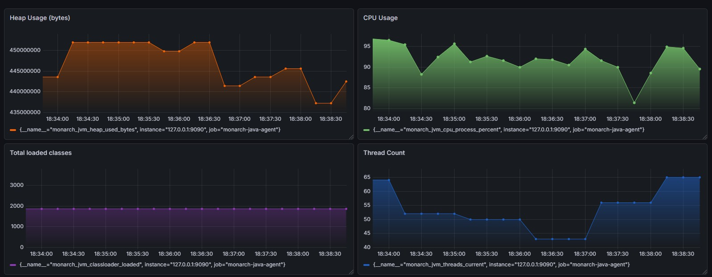

Monarch is a hybrid Java agent for production diagnostics and JVM observation. It lets you attach targeted bytecode instrumentation to a live JVM, expose Prometheus-compatible JVM metrics, and move between instrumenter, observer, and hybrid workflows without changing the application code.
Operational safety: Monarch contains agent-side failures at startup and runtime boundaries so instrumentation errors degrade behavior instead of crashing application flow.
“Arise, shadows of execution!”
Use Monarch when you need to:
.class files or .jar entries using JVM redefine./metrics.| Argument | Description |
|---|---|
configFile |
Path to the configuration file specifying agent behavior [Mandatory]. |
agentLogFileDir |
Directory where initialization logs will be written. |
agentLogLevel |
Log verbosity level (DEBUG, INFO, WARN, ERROR). |
smtpProperties |
Path to SMTP configuration for sending alert emails. |
agentJarPath |
Path to the MonarchJavaAgent jar [Mandatory for startup attach]. |
You can attach MonarchJavaAgent either during startup or during runtime.
For startup:
-javaagent.java -Xverify:none -javaagent:/path/to/MonarchJavaAgent.jar=configFile=/path/to/config.yaml,agentLogFileDir=/path/to/log/dir,agentLogLevel=DEBUG,smtpProperties=/path/to/smtpProperties.props,agentJarPath=/path/to/MonarchJavaAgent.jar YourMainClass
For runtime attach:
monarchAgentStart.bat or monarchAgentStart.sh.Monarch supports a nested, mode-aware YAML structure.
instrumenter: bytecode instrumentation onlyobserver: JVM observation and metrics onlyhybrid: both instrumentation and observer featuresCanonical sample configuration:
mode: hybrid
instrumentation:
enabled: true
configRefreshInterval: 15
traceFileLocation: C:\\TraceFileDumps
agentRules:
- ClassA::methodA@INGRESS::STACK
- ClassA::methodA@INGRESS::ARGS
- ClassA::methodA@EGRESS::RET
- ClassA::methodB@INGRESS::ARGS
- ClassA::methodB@INGRESS::STACK::[com.asm]
- ClassA::methodB@EGRESS::STACK
- ClassA::methodB@EGRESS::RET
- ClassB::methodC@PROFILE
- ClassB::methodC@INGRESS::HEAP
- ClassB::methodC@INGRESS::ADD::[System.out.println(20);]
- ClassA::methodA@INGRESS::ADD::[System.out.println(this.getClass().getName());]
- ClassA::methodA@CODEPOINT(11)::ADD::[System.out.println(499);]
- ClassA::methodA@CODEPOINT(11)::ADD::[System.out.println(499 + "," + "Ashutosh Mishra");]
- com.example.MyService@CHANGE::FILE::[/opt/patches/MyService.class]
- com.example.*@CHANGE::JAR::[/opt/patches/hotfix.jar]
observer:
enabled: true
printClassLoaderTrace: true
printJVMSystemProperties: true
printEnvironmentVariables: true
metrics:
exposeHttp: true
port: 9090
heapUsage: true
cpuUsage: true
threadUsage: true
gcStats: true
classLoaderStats: true
alerts:
enabled: true
maxHeapDumps: 3
emailRecipientList:
- abc@example.com
- ashutosh@asm.com
Legacy flat keys are still accepted, but nested config is the default and takes precedence when both forms are present.
Rule syntax:
<FQCN>::<MethodName>@<EVENT>::<ACTION>
Where:
<FQCN> is the fully qualified class name<MethodName> is the method name<EVENT> is one of INGRESS, EGRESS, CODEPOINT, PROFILE<ACTION> is one of STACK, HEAP, ARGS, RET, ADDClass replacement rule syntax:
<ClassPattern>@CHANGE::FILE::[</absolute/path/to/ClassName.class>]
<ClassPattern>@CHANGE::JAR::[</absolute/path/to/patches.jar>]
Where:
<ClassPattern> supports exact FQCN (for example com.example.MyClass) or wildcard suffix matching (for example com.example.*)CHANGE applies only to classes that are already loadedFILE reads replacement bytecode from a single class fileJAR reads replacement bytecode from matching class entries inside the jarIf observer.metrics.exposeHttp: true is enabled, Monarch starts a lightweight HTTP server exposing JVM metrics.
Default endpoints:
http://localhost:9090/metricshttp://localhost:9090/metrics.jsonPrometheus scrape config:
global:
scrape_interval: 5s
scrape_configs:
- job_name: "monarch-java-agent"
static_configs:
- targets: ["127.0.0.1:9090"]
Common Prometheus queries:
monarch_jvm_heap_used_bytesmonarch_jvm_cpu_process_percentmonarch_jvm_threads_currentmonarch_jvm_classloader_loadedExample Grafana dashboard:

git clone https://github.com/AshutoshIWNL/MonarchJavaAgent.git
cd MonarchJavaAgent
mvn clean package
powershell -ExecutionPolicy Bypass -File scripts\smoke-all.ps1
Individual suites:
powershell -ExecutionPolicy Bypass -File scripts\smoke-javaagent.ps1
powershell -ExecutionPolicy Bypass -File scripts\smoke-attach.ps1
powershell -ExecutionPolicy Bypass -File scripts\smoke-class-replace.ps1
powershell -ExecutionPolicy Bypass -File scripts\smoke-config-reload.ps1
powershell -ExecutionPolicy Bypass -File scripts\smoke-invalid-rule.ps1
powershell -ExecutionPolicy Bypass -File scripts\smoke-config-precedence.ps1
This project is licensed under the Apache License 2.0 - see the LICENSE file for details.